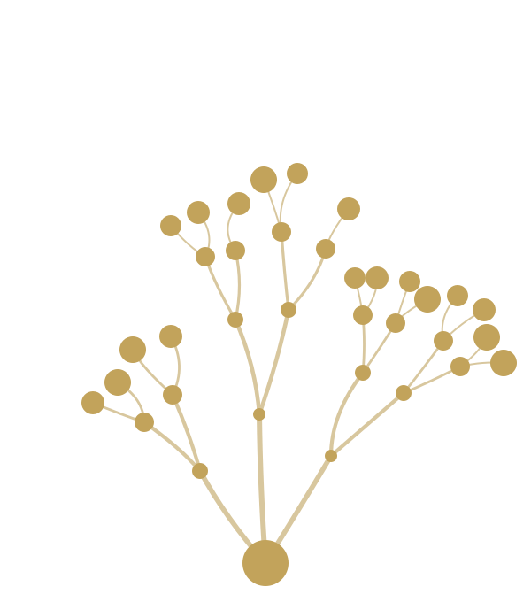

[Uma linha de contexto que promete o que os próximos slides entregam.]
[Parágrafo principal. Uma ideia por slide. Negrito só no que decide.]
[Segundo parágrafo opcional — corte se passar de 4 linhas.]
[Convite concreto e único — ex.: peça o Mapa de Vazamento gratuito: uma análise da sua empresa por informação pública, entregue em 48 horas.]
[A frase citada — máximo 3 linhas nesta fonte]
[O que o número significa e a premissa/fonte. Número sem premissa citada não é publicado.]